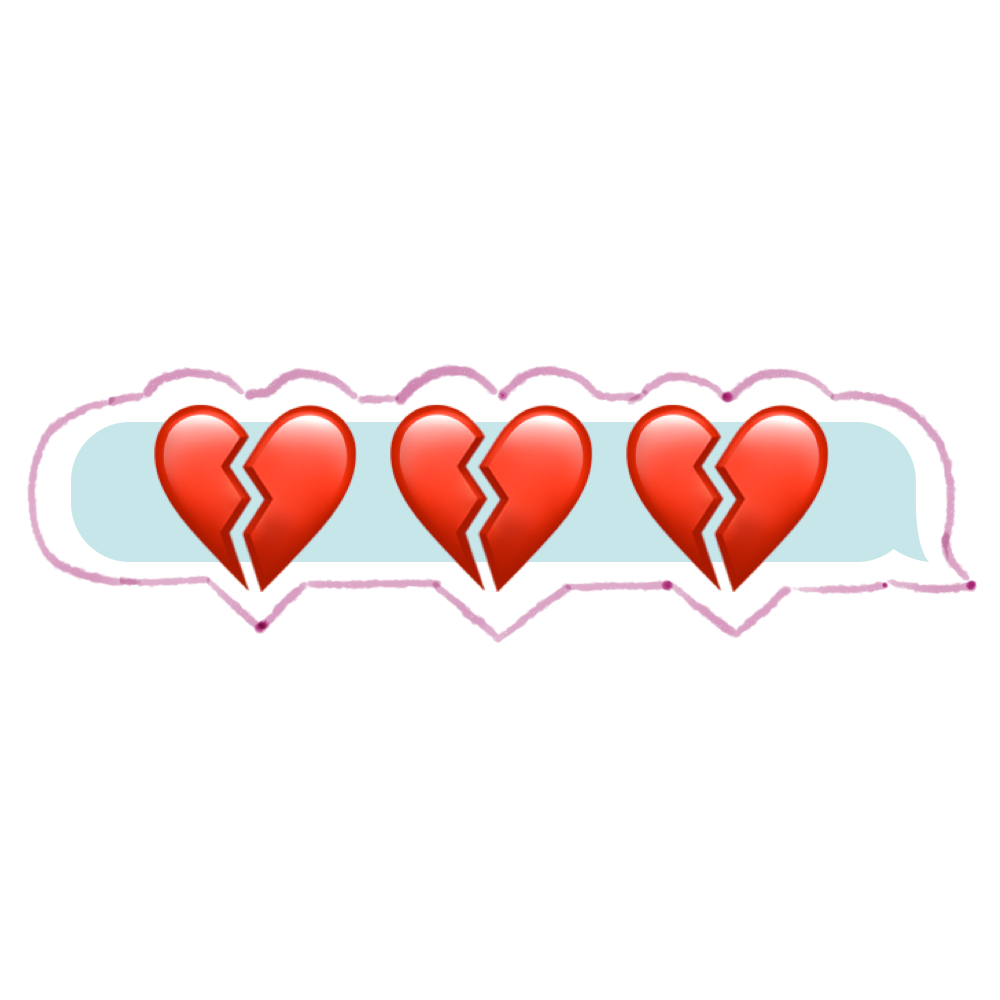
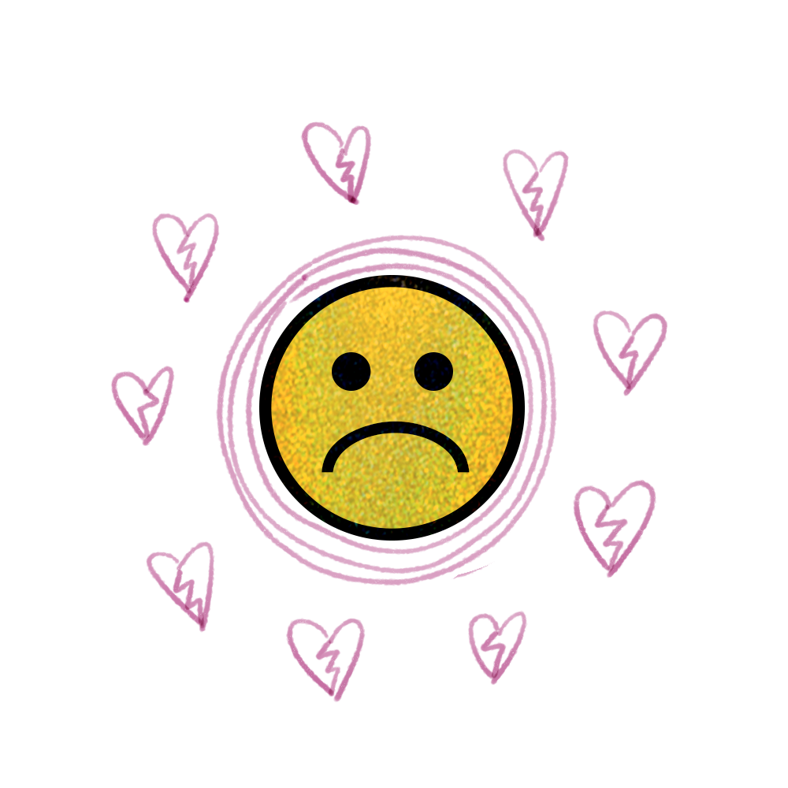

How my pandemic breakup both broke me and put me back together again
While the pandemic can make it harder to cope with a breakup, isolation allows people to reconnect with themselves in a meaningful way
CONTENT WARNING: This article discusses an emotionally abusive relationship.
I was supposed to leave my boyfriend of four years at the same time I was leaving for exchange in London, in January of 2020. I wanted a fresh start away from home, even if it was just temporary, and away from the mess that was our toxic relationship. But I couldn’t bring myself to do it; years of emotional and mental abuse disguised as love had exacerbated my anxious attachment.
Despite not officially ending our relationship, our conversations dwindled the longer I was away. Phone calls about our days turned into quick, dry texts. Indifference entered our tones; neither of us were interested in what the other was doing. But it didn’t matter to me. I spent the time away focusing on myself. I felt happy and free, forming friendships and travelling to different countries on my own. This was something I never thought I could do because of my anxiety.
I was building a better version of myself and shedding away what was no longer serving me.
Then came mid-March: my newfound independence came to a sudden halt, as I hurried to reach home before Canada’s borders closed due to the pandemic. Between rushing to pack my suitcases, I called my boyfriend to ask for help in figuring out the flight home.
“You’re just needy,” he said. I hung up and booked my flight without his help.

Alone in my London apartment—my roommates having already fled—I mourned my time abroad that was going to be lost. Anxiety-ridden and overwhelmed, I returned home to Canada at the start of quarantine. The version of myself that I had built while abroad instantly crumbled, along with the temporary life I had built there. With everything else turned upside down, I was left trying to fix a relationship that was already dead because I wanted the superficial comfort of familiarity, despite its toxicity.
In May, I finally wrote out my final message to him—a paragraph that came easily on the first try. I sat on my bedroom floor as panic swirled inside my chest, telling me to delete it all because I didn’t know what would come next.
I pressed send anyway.
My ex would constantly lie to me, gaslight me, belittle my accomplishments, insult my appearance, guilt me and blame me for any issues that arose. I had to put myself first after years of moulding my emotions to his, constantly on edge because of his changing moods. After sending the text, I put my phone down and relief instantly swept through my body.
Breaking up during a pandemic forced me to confront my anxious attachment style, my boundaries and what treatment I tolerated from others. Whether I wanted to or not, I had to do this internal work, not only to heal from the emotional trauma he caused me but to also work on my own issues with anxiety, and the boundaries that I convinced myself I had overcome during my time away from home.
Of course, I wasn’t the only one going through a breakup during the start of the pandemic. According to a dating.com survey, 67 per cent of those interviewed said they went through a breakup in 2020, which was up from 34 per cent in 2019. Those with anxious attachment styles can experience extra difficulty with breakups, often stemming from inconsistent parenting styles. Those with this type of attachment have a strong need for safety and a fear of abandonment that can control their relationships.

While I’m better off for it, breaking up with someone during a pandemic came with its own special set of unsavoury circumstances. Not only did I have to recover from a breakup with a narcissistic emotional abuser, I had to do it in isolation during quarantine on top of my worsening mental health, without my usual routine of going to work and school and seeing friends.
Natalia Juarez, a Toronto-based breakup coach and dating strategist, says a pandemic breakup can be harder because of the lack of healthy outlets one would need to process the breakup and soothe the nervous system. This includes activities such as going out with friends or other social hobbies.
She adds that this can lead to heartbreak fatigue—feeling drained from being heartbroken with fewer ways to cope—while the pandemic prolongs the healing process. “Nobody knows how to handle this pandemic, and it's this unknown stress for some people,” says Juarez. “It ends up compounding the grief."
According to a December 2020 study by the Canadian Mental Health Association in partnership with the University of British Columbia, 40 per cent of Canadians said their mental health has been deteriorating since March.
While it was a relief to be rid of the relationship, I had completely lost myself in my ex’s narcissistic cycle of abuse, to the point that I became even more uncomfortable in the peace that followed his absence.
In a 2015 article, clinical social worker and psychotherapist Andrea Schneider says that narcissistic abuse generally follows a cycle of idealization, devaluing and discarding. Ultimately, the narcissist discards their partner who served to fuel their ego, writes Schneider. However, the short periods of attention and affection in my relationship had become an addiction that I now had to recover from.
Juarez says there are four pillars to keep in mind when recovering from a breakup, all of which can be adapted to the pandemic: self-care by eating and sleeping well; grief work through processing your emotions, such as journaling and talking to people like friends or a virtual therapist; rebuilding how you spend your time and who you communicate; and finally joy, to keep pleasure in your life.
She adds that a breakup can be a tremendous opportunity for growth. “Time is slow, but you're also so present. Everything feels more intense during that time,” she says.

“It's like this double opportunity. A lot of people within a pandemic are tuning in [to themselves] and on top of that they’re going through a breakup.”
The next few months in the pandemic became a mix of grieving and rebuilding both my sense of self and my non-romantic relationships, something I had only scratched the surface of while on exchange. Now I had a vast amount of time to sit alone with my thoughts and feelings, and as terrifying as that was at first, I slowly became grateful for it.
I began learning how to fully surrender to my emotions, allowing myself to miss the person I thought he was and the relationship I thought we had. I allowed myself to hate him and to be angry. I let myself exist with no pressure to be productive or to heal on a deadline. I revisited things I used to enjoy, such as journaling and painting, that helped me express the entanglement of thoughts and emotions I was feeling.
I strengthened my relationship with my mom and my friends, who gave me the space to confide in them when I needed to, and who reminded me of who I was outside of the trauma I endured. One of these people was an old best friend that I reconnected with, which most likely wouldn’t have happened without the breakup because my time and energy were so intertwined with my ex. All of these people helped show me what authentic and genuine love really looks like through emotional support, open communication, respect, honesty and trust.
I’ve formed new relationships that continue to teach me how to love others in a healthy way, by showing me what secure attachment and healthy boundaries can look like. I’m gradually learning to silence the unnecessary alarm bells that used to blare in my head when I felt symptoms of my anxious attachment being triggered. In healing from this attachment style, I’m continuing to learn about who I am outside of my relationships with others and what I can offer myself, rather than looking for outward validation.
Without the pandemic, I don’t think I would’ve grown from this breakup in the same way. As awful as the situation was, I benefited from the forced alone time that quarantine gave me to rebuild my sense of self-worth, that I most likely couldn’t have achieved otherwise.
I no longer recognize the person I was when I was with him, pre-pandemic. I’ve come to realize that my grief was never about him, but about the version of myself that needed to die in order for this new version to be rebuilt.